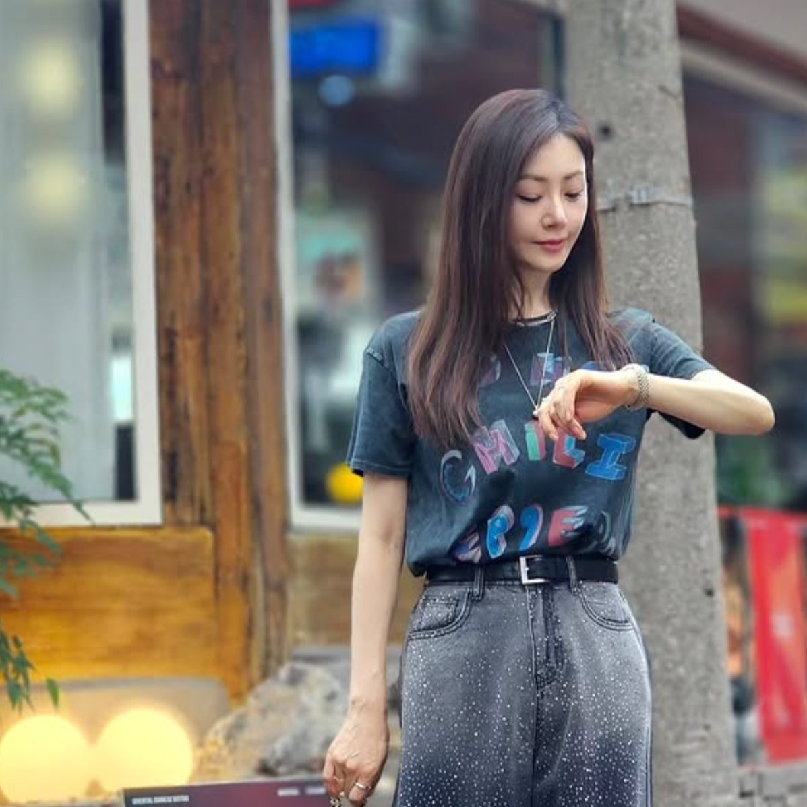
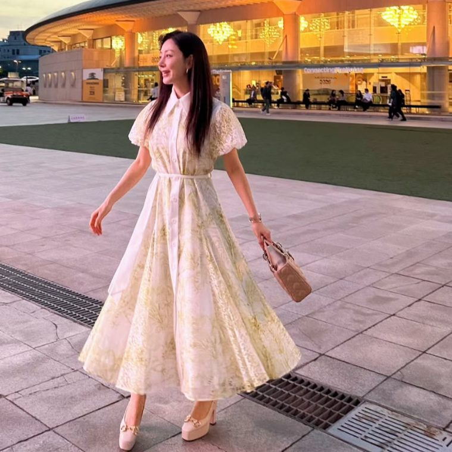

배우 오나라가 SNS를 통해 다양한 샐러드 식단을 공개하면서 50대 식단 관리에 대한 관심도 높아지고 있습니다.
교수 남자친구와 25년째 오랜 연애를 이어오며 많은 사랑을 받고 있는 오나라(1974년생)는 만 51세의 나이에도 프로필상 164cm에 체중 47kg을 유지하며 늘 생기 넘치고 균형 잡힌 모습을 보여주고 있는데요.
최근 오나라가 직접 공개한 식단을 보면 무조건 식사량을 줄이기보다는 채소와 단백질, 탄수화물을 함께 구성한 식사를 선택한 모습이 눈에 띕니다. 오나라의 실제 공개 사례를 통해 50대 몸매 관리에서 참고할 만한 식단과 운동 방법도 함께 정리해 보았습니다.
배우 오나라의 일상 모습 (출처: 오나라 인스타그램)
1. 오나라가 공개한 47kg 몸매 관리 식단
오나라가 보여준 식습관에서 가장 참고할 부분은 적게 먹는 것보다 영양 밀도가 높은 음식을 선택하는 것입니다. 단순히 칼로리만 제한하는 다이어트가 아니라 탄수화물, 단백질, 식이섬유를 균형 있게 섭취하는 구성을 보여줍니다.

일상 속 배우 오나라 (출처: 오나라 인스타그램)
2. 실제로 공개한 샐러드 3가지
오나라는 샐러드를 단순한 다이어트 음식으로만 생각하기보다는 맛있게 즐기는 한 끼 식사로 활용하고 있습니다. SNS를 통해 직접 만들어 공개한 대표적인 샐러드 식단입니다.
1) 버섯 & 당근을 곁들인 메밀면 샐러드
포만감을 주는 메밀면에 버섯과 당근 등 채소를 곁들여 식이섬유와 적절한 탄수화물을 함께 챙기는 구성입니다.
2) 토마토 & 단호박 & 닭고기 샐러드
단호박과 토마토에 닭고기를 넣어 단백질을 채우면서 채소를 풍성하게 섭취할 수 있도록 구성했습니다.
3) 참외 & 루꼴라 샐러드
제철 과일인 참외에 루꼴라와 핑크 페퍼를 더하고, 올리브유와 식초를 활용한 드레싱을 곁들여 상큼하고 가볍게 즐기는 방식입니다.
※ 과일 샐러드를 섭취할 때도 달걀, 닭고기, 두부, 생선 등 단백질 식품을 함께 구성하는 것이 근육 유지에 도움이 됩니다.
3. 50대 몸매 관리에서 중요한 근력 운동
나이가 들수록 근육량과 근력이 감소하기 쉬워지기 때문에 40~50대 이후에는 근력 운동을 꾸준히 하는 것이 중요합니다.
오나라 역시 무용을 전공하고 오랫동안 뮤지컬 무대에서 활동해 온 만큼 기본적인 신체활동량과 몸을 사용하는 습관이 잡혀 있습니다. 이러한 무용 기반의 신체 활동 경험은 유연성과 균형감각, 바른 자세를 유지하는 데 큰 도움이 됩니다.

배우 오나라 (출처: 오나라 인스타그램)
4. 50대라면 참고할 만한 근력 운동 4가지
[안내] 아래 운동은 오나라가 직접 공개한 운동 루틴을 그대로 옮긴 것이 아니라, 50대 체형 관리에 일반적으로 활용할 수 있는 운동을 정리한 것입니다.
| 운동 종류 |
주요 자극 부위 |
50대 추천 효과 |
| 스쿼트 (Squat) |
허벅지(대퇴사두근), 엉덩이 |
하체 근육 유지, 일상 체력 및 관절 지지력 강화 |
| 런지 (Lunge) |
허벅지, 둔근, 고관절 |
한쪽 다리 체중 지지, 좌우 균형감각 향상 |
| 플랭크 (Plank) |
코어 전체 (복부, 등, 척추) |
코어 근육 강화 및 몸통 안정성 향상 |
| 걷기 및 유산소 |
전신 유산소 |
근력운동과 병행 시 심혈관 건강 및 체지방 관리 |
5. 오나라 식단에서 참고할 수 있는 6가지
01
균형 잡힌 식사 선택
굶는 방식보다 영양 균형 챙기기
02
다양한 채소 활용
샐러드 재료를 다채롭게 구성
03
단백질 식품 챙기기
닭고기, 달걀, 두부 등 식사에 적절히 활용
04
탄수화물 적절 섭취
메밀면, 단호박 등 복합 탄수화물 활용
05
제철 식재료 활용
참외, 토마토 등 신선한 식재료
06
가벼운 드레싱 사용
올리브유와 식초 등으로 과하지 않게
SNS를 통해 근황을 전한 배우 오나라 (출처: 오나라 인스타그램)
6. 자주 묻는 질문 (FAQ)
Q. 50대에도 탄수화물을 꼭 섭취해야 하나요?
탄수화물은 우리 몸의 중요한 에너지원이기 때문에 무조건 제한하기보다는 개인의 활동량과 식사 구성에 맞춰 적절하게 섭취하는 것이 좋습니다.
Q. 샐러드 드레싱은 어떤 것을 쓰는 것이 좋은가요?
드레싱은 제품별 당류와 나트륨 함량을 확인하고, 올리브유와 식초처럼 재료가 단순한 드레싱을 적당량 활용하는 방법도 있습니다.
Q. 관절이 약한 중년도 스쿼트나 런지를 해도 괜찮을까요?
무릎 통증이 있다면 가동 범위를 줄인 하프 스쿼트나 의자를 잡고 하는 동작부터 시작하여 점진적으로 하체 지지력을 키워가는 것이 안전합니다.